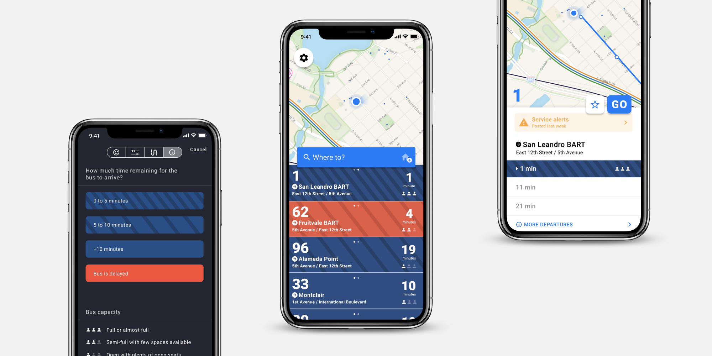
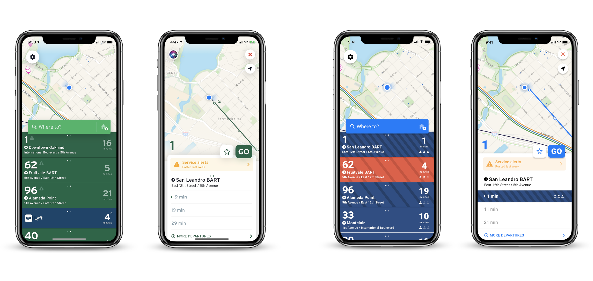
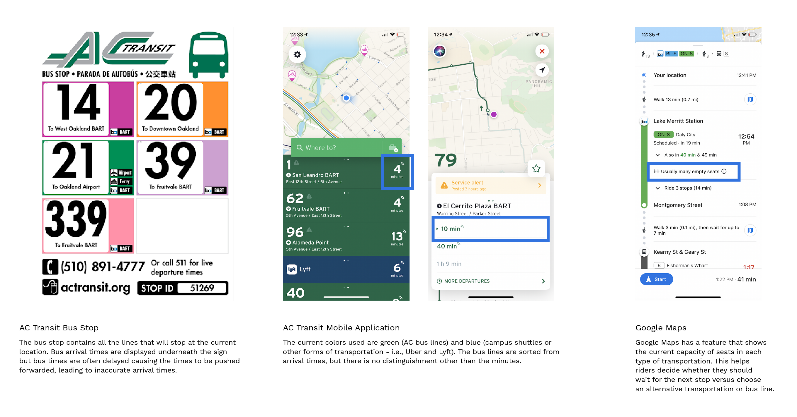
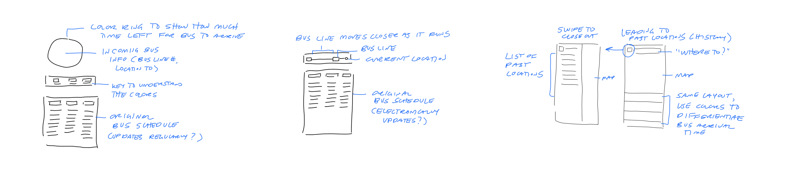
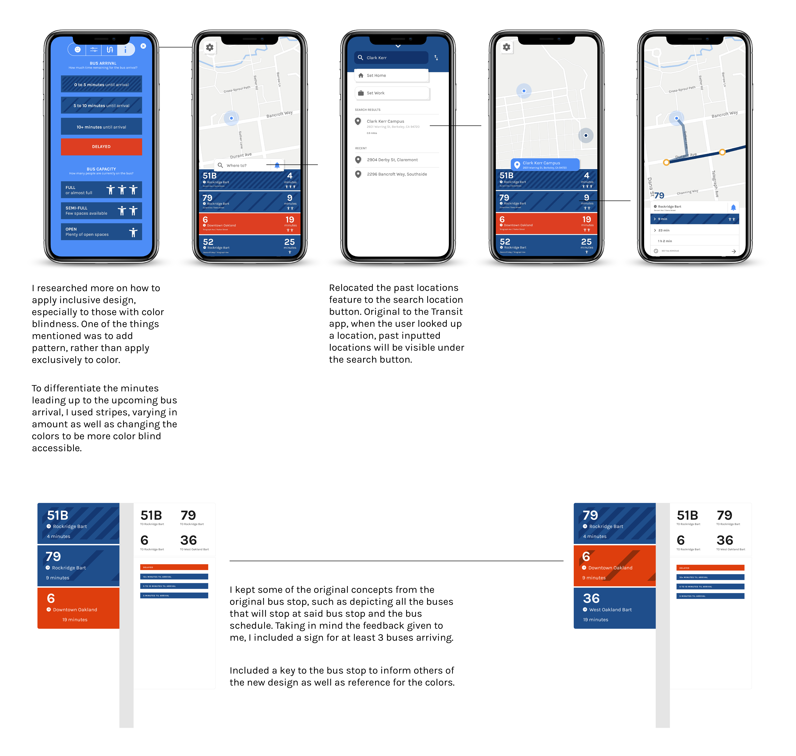

Case Study — 2019
Adding Accessibility to Bus Travels

To ensure increased accessibility and visibility of bus details for current Berkeley residents and students, I rebranded the AC Transit mobile application and bus stop, including patterns, color-blind visuals, and new iconography.
Role
User ResearcherProduct Designer
Team
Tanvee DesaiXiaokang Feng
Kamya Venkatesan
Tools
Adobe DrawFigma
Timeline
2 months, Oct to Nov 2019 (Research)1 month, Nov 2019 (Prototype)
Problem
How might we make the AC Transit Mobile app and bus stop visually accessible to make sure people are notified of the current bus times?
Getting to class is an absolute struggle, especially when classes are far out of reach. When it comes to someone living far away from campus, the AC Transit is the way to go. However, the bus often is inaccurate and inconsistent when it comes to bus arrival times, and bus arrival is hard to visually access. At certain peaks of the day, the bus becomes extremely cramped, often requiring other riders to wait for the next one.
Solution
Apply new branding for AC Transit app and bus stop, including patterns and color-blind visuals.
I decided to rebrand the current Transit bus stops and mobile application to be more visible on showing late bus stops and accurate bus arrivals. My solution would be accessible for people who either regularly used the app or those who didn’t use the app, and those relatively near the bus stop.

Original branding (left) and branding redesign (right).
Research
Check out our research in the case study here.
One student mentioned that due to this mistrust of the AC Transit app, she “always look[ed] at it 10 to 20 minutes before”. Another student mentioned that she would often have older adults ask her consistently when the bus would arrive, since they wouldn’t have the mobile app on hand.
Solution
Apply new branding for AC Transit app and bus stop, including patterns and color-blind visuals.
I decided to rebrand the current Transit bus stops and mobile application to be more visible on showing late bus stops and accurate bus arrivals. My solution would be accessible for people who either regularly used the app or those who didn’t use the app, and those relatively near the bus stop.
Ideation
I looked towards the mobile app and Google Map to see where visual cues could be noted.

After looking carefully at the details and cues that the Transit app offered, I delved into my own sketches.
I sketched out the alternative ways the visual cues of a bus arrival or delay could be noted in both the app and physical bus stop sign.
I decided to keep some original layouts from both the bus stop and mobile app - i.e., bus schedule, lined up bus lines on mobile app based on bus arrival time. For the the bus stop, I tried different ways to illustrate an incoming bus line - through interchanging color rings and line diagram.
I decided to keep some original layouts from both the bus stop and mobile app - i.e., bus schedule, lined up bus lines on mobile app based on bus arrival time. For the the bus stop, I tried different ways to illustrate an incoming bus line - through interchanging color rings and line diagram.

With my wireframes, I merged my sketches together, primarily focusing on color to convey certain states.

Wireframe of AC Transit app and bus stop.
In regards to the colors used for both the bus stop and app, I needed to make them more visually accessible. There were suggestions to add multiple buses for the stop sign, as some bus lines might delay and, therefore, multiple buses might stop at the same stop around the same time.
Final

Outcome
I expanded my knowledge and skill in design. My prior knowledge of design was to simplify complex and overwhelming data into a simple, easily-digestible visual graphic. By working on this case study, I focused less on the ‘aesthetics’ on design and focused more on the needs of users. I drew my approach to innovation through assessing the needs of the people, the feasibility of the product, and the success of that product.
Next steps
Adding another feature that can add more accuracy to bus arrival —
One of the bugs which prevented others from arriving to class on time was the bus delays. The bus was found to be unreliable by many students due to the inconsistent and inaccurate arrival times noted in the Transit app. In addition, during peak times, many students find it difficult to get on the bus home because the bus is too crowded. Having an additional feature, in which users can ping the bus location and notify other users of the amount of people on the bus, would help resolve this bug.Implementing other features to make the AC Transit more accessible to everyone —
Having a voice feature would aid those who have trouble hearing. Similar to traffic stops and lights, a voice feature would note bus arrival times every 15 minutes or 5 minutes before the bus arrives.